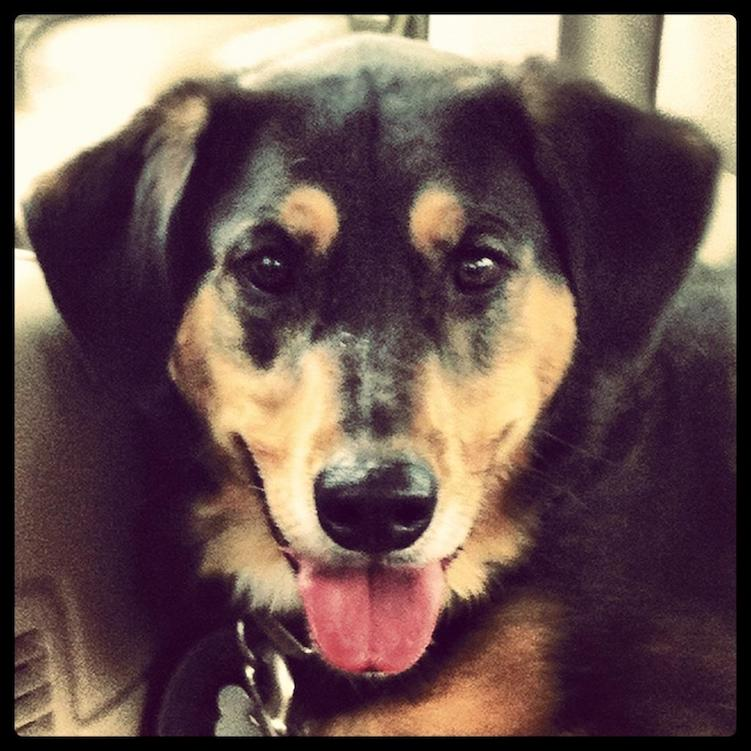
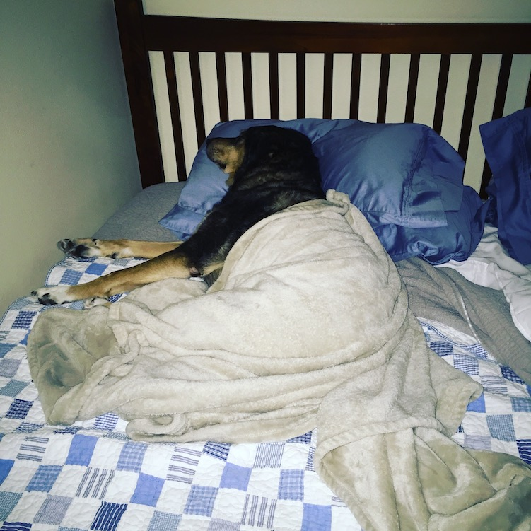
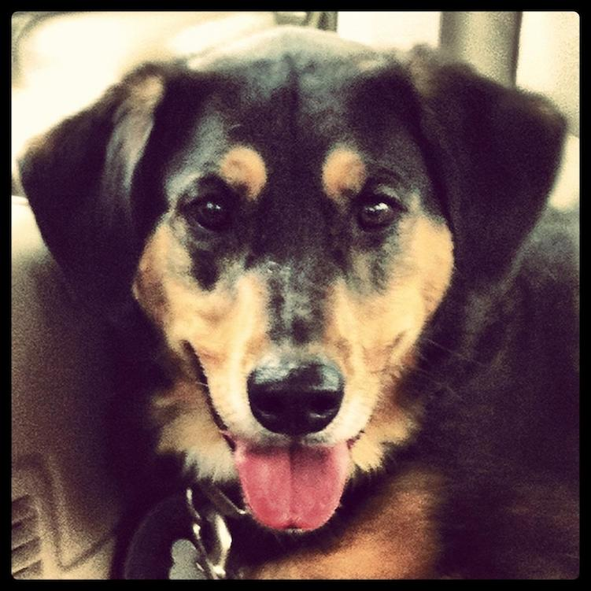
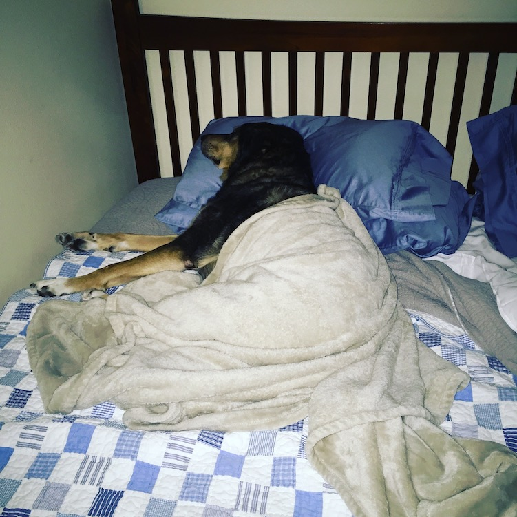
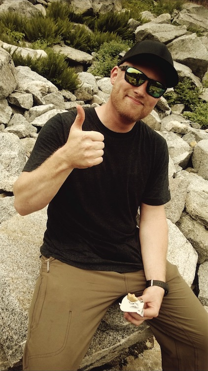
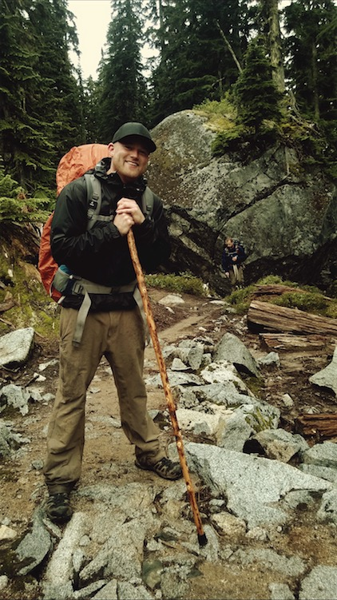
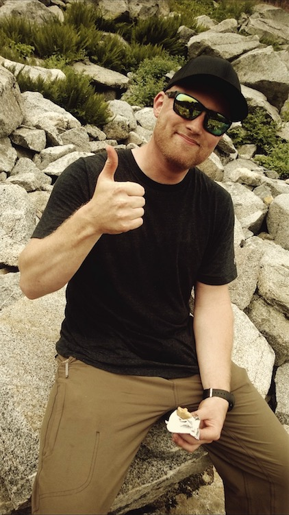
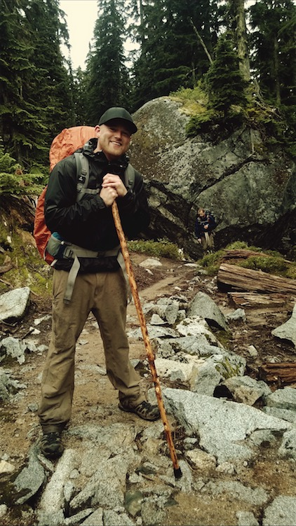

Background
Hi there! Thanks for visiting my very first web page! I'm a new Full-Stack Software Developer student at Alchemy Code Lab here in Portland, Oregon. I'm also an entrepreneur, inventor, and a HUGE dog lover - if you couldn't tell ;-).
My main goal for this site is to have it become a platform for my future website which will be based around James (my dog) who passed away last May.
The focus will be to bring people together with a common product and spread the awareness of animal rights and adoption. The goal will be to ultimately create another branch of support for shelters across the country. I hope you enjoy what I've put in here for you! Feel free to connect with my via my LinkedIn handle below! Also check out my YouTube channel for some past videos of James!
Interests
Aside from being an animal lover, I'm also an avid backpacker, golfer, snowboarder, gym enthusiast, runner, artist, and much more.
- Hiking
- Golfing
- Running
- Reading
- Hanging out with Dogs
My main goal for this site is to have it become a platform for my future website which will be based around James (my dog) who passed away last May.
The focus will be to bring people together with a common product and spread the awareness of animal rights and adoption. The goal will be to ultimately create another branch of support for shelters across the country. I hope you enjoy what I've put in here for you! Feel free to connect with my via my LinkedIn handle below!
Previous Career
Aside from being an animal lover, I'm also an avid backpacker, golfer, snowboarder, gym enthusiast, runner, artist, and much more.
My main goal for this site is to have it become a platform for my future website which will be based around James (my dog) who passed away last May.
The focus will be to bring people together with a common product and spread the awareness of animal rights and adoption. The goal will be to ultimately create another branch of support for shelters across the country. I hope you enjoy what I've put in here for you! Feel free to connect with my via my LinkedIn handle below!
Gallery
 





 


